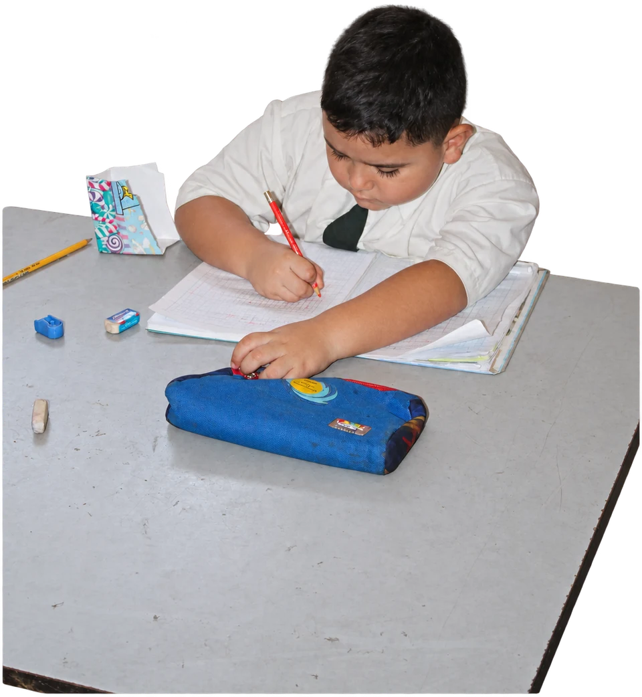
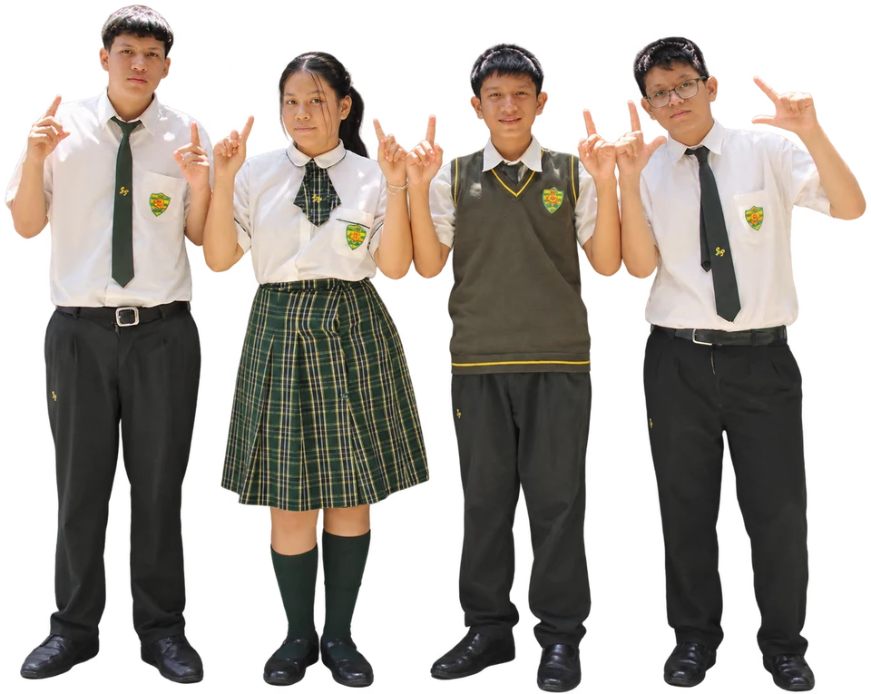
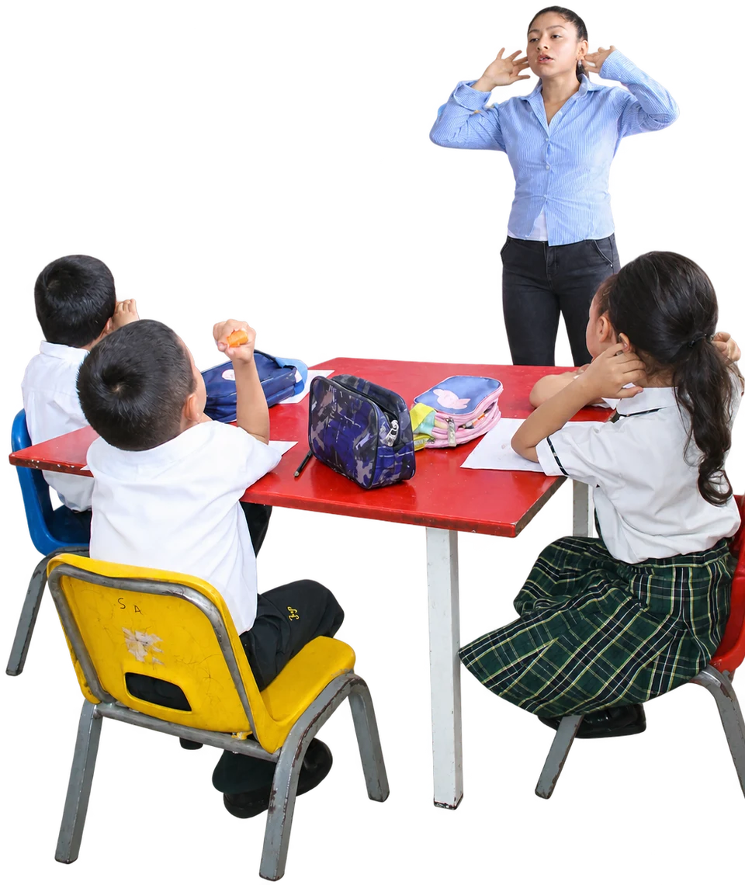
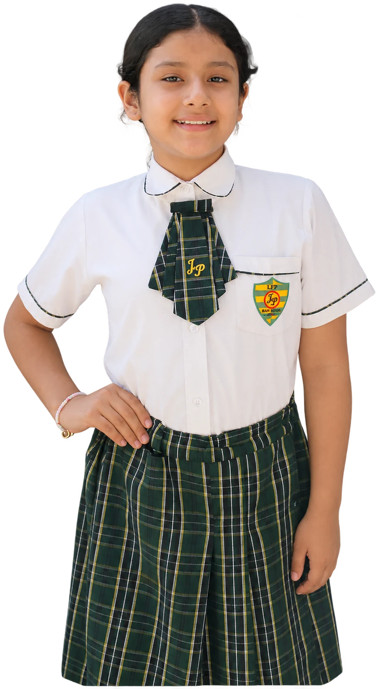

Tiempo para concentrarse
Un cuaderno abierto y una idea por descubrir.
Compañeros, docentes y nuevas ideas. Una mirada a los momentos que dan vida a nuestra comunidad.
Conoce nuestros momentos
Concentrarse en una tarea, participar en clase y compartir una mesa: pequeños momentos para seguir aprendiendo.

Un cuaderno abierto y una idea por descubrir.

Gestos, preguntas y atención compartida.

Una mesa para aprender y compartir entre compañeros.

La vida escolar también está en las personas con quienes compartimos el día: quienes escuchan, acompañan y aprenden a nuestro lado.
Un lugar para conocernos y crecer juntos.
Más momentos de TambograndeEn clase y con la comunidad, cada encuentro tiene sus protagonistas.